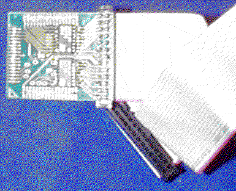
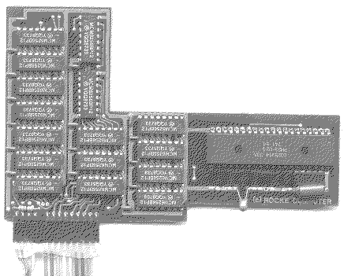

Previous
Next
TOC
Der MCU Stecker von der XTRA Speichererweiterung, dieser muß in den
Sockel der MCU gesteckt werden wobei die MCU selber nicht entfernt
werden darf!

Die teilsteckbare Speichererweiterung mit 0.5 MB Ram für die 260 und
520ST Computer von der Firma Rolf Rocke Computer

weiterblättern
Kapitel Die Speichererweiterungskarten, Seite 7